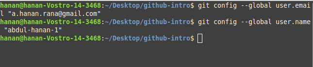

Git is the world's most popular version control system (VCS), and, consequently, knowing how to use Git has become a mandatory skill in the world of coding.
In this step-by-step beginner's guide, you will learn how to start using Git effectively.
Git is a free, open-source, distributed version control system that handles source code changes in software projects of all sizes. Git allows multiple developers to work together on the same project with ease.
On the other hand, GitHub is a company that offers a cloud-based repository allowing developers to store and manage their code and to track and control code changes. You can use Git without GitHub, but you can't use GitHub without Git.
Follow the steps below to get started using Git.
The first thing you need to do is to install Git and create a GitHub account.
After installing Git on your machine, the next step is to create a free GitHub account
Follow these steps:
Visit the official account creation page: Join Github
GitHub allows you to keep track of your code when you're working with a team and need to modify the project's code collaboratively.
Follow these steps to create a new repository on GitHub:
Follow these steps to clone the newly created repo to your local machine.
Use the git config user.email "your_email" and git config user.name "your_username" commands for this purpose.
